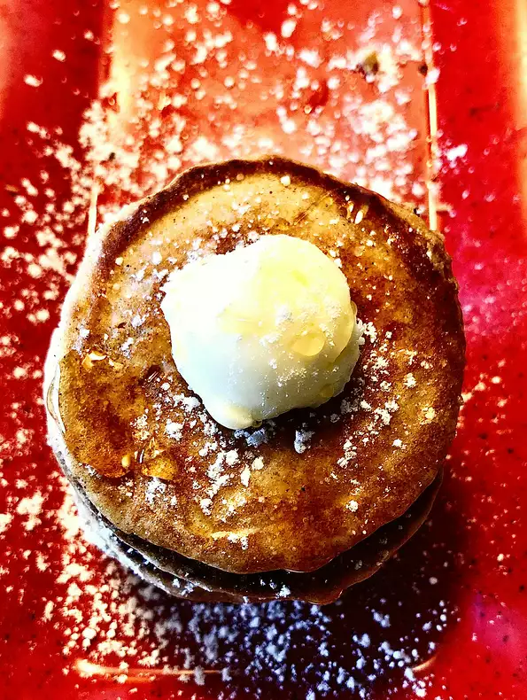

Pancake

The perfect breakfast
Pancakes have been a popular breakfast dish in America for a long time. This recipe will show you how to make to best version of the pancake. The recipe will include a variety of ingredients, such as powdered sugar and pancake mix. Pancakes are quick and easy to make with your home stove. This recipe can help start your day off right and healthy.
Ingredients
- 2 cups complete buttermilk pancake mix
- 1 tablespoon French vanilla flavored powdered non-dairy creamer
- 2 tablespoons cinnamon sugar
- ¼ cup water
- ½ cup soy milk
- 1 teaspoon vanilla extract
- 1 teaspoon honey
Steps
- In a medium bowl, mix together the pancake mix, coffee creamer, and cinnamon sugar. Add the water, soy milk, honey and vanilla; mix until just blended, but do not over mix or the pancakes will be tough.
- Heat a griddle or large skillet over medium heat. Spray with non-stick cooking spray. Use about 2 tablespoons of batter per pancake, and spoon onto the griddle. Cook until bubbles form, then flip and brown on the other side.